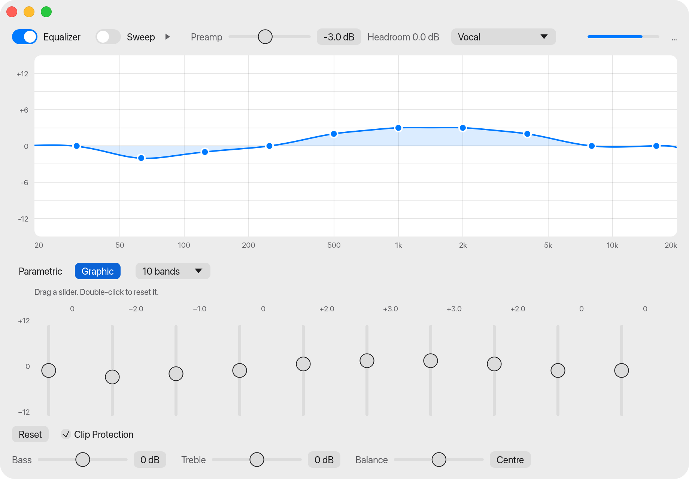

How to use AutoEq on a Mac
AutoEq produces headphone correction settings, but it does not equalize anything itself. On macOS you need an equalizer that can load them. EQ imports them directly and applies them to every sound your Mac plays.
Updated 21 November 2026 · Applies to EQ 0.6.0
What AutoEq is, and what it is not
AutoEq is a project that uses headphone measurements to generate correction settings for them. Its own description is that it produces settings for many kinds of equalizer apps but does not do the equalization itself. The corrected sound only exists once an equalizer on your computer applies those settings to what you play.
On a Mac that usually raises a second problem: macOS does not include a general-purpose system-wide equalizer, and many third-party equalizers need a virtual audio device installed first. EQ avoids that by using the system audio capture API built into macOS 14.2 and later; see how EQ works without BlackHole.
Step by step
- Find your headphones. Open autoeq.app and pick your headphone model and the measurement or target you want.
- Choose the Equalizer APO format. Choose “EqualizerAPO ParametricEq” as the equalizer app and download the
ParametricEQ.txtfile. - Import it into EQ. In EQ, choose Presets › Import…, or drop the
.txtfile on the EQ window. It is saved as a preset. - Check the headroom. Look at the headroom in the top bar. If the boosts reach past full scale, accept the suggested preamp. With clip protection on (the default), the limiter also turns the output down for a moment instead of distorting.
- Compare with bypass. Press ⌘B to switch the EQ off and on, or use Set A and ⌥⌘B for a volume-matched comparison, and listen for what changed.
EQ reads up to 16 filters from the file. Peak, low shelf, high shelf, low pass and high pass filters are supported, with either Q or a bandwidth in octaves, and a Preamp line is applied as the preamp. Filters of any other type, or beyond the sixteenth, are skipped.
Apply it to the right output
EQ remembers a separate curve for each output, so your speakers and your headphones each keep their own settings and get them back when you switch. Make your headphones the current output before you apply the imported preset, so the correction lands on the output it was made for. If you would rather use one curve everywhere, turn off the per-output option under Equalizer.
A preset keeps the whole sound: the mode, the bands or sliders, the preamp, and bass, treble and balance. Applying a preset can be undone with ⌘Z.
Adjust it after importing
An imported correction is a starting point, not a verdict. In EQ it is an ordinary set of parametric bands: drag a point on the curve to change its frequency and gain, scroll over it to change Q, or type exact values in the band list. If a correction sounds too bright or too heavy for your taste, nudge the shelves or use the bass and treble controls rather than starting over, and save the result with Save As… (⇧⌘S).

Other equalizers for the same files
The ParametricEQ.txt format comes from Equalizer APO, a Windows equalizer, which is why AutoEq publishes it. EQ reads the same format on the Mac. If you are choosing between Mac equalizers, the comparison page lists the main options.
Frequently asked questions
Does AutoEq work on a Mac?
AutoEq itself only generates settings. On a Mac you load them into an equalizer that supports the format. EQ imports AutoEq ParametricEQ.txt files, and any Equalizer APO file in that style, as a preset.
Which AutoEq format should I download for EQ?
Choose “EqualizerAPO ParametricEq” as the equalizer app and download the ParametricEQ.txt file.
Do I need BlackHole to use AutoEq on a Mac?
Not with EQ. EQ captures system audio with a Core Audio process tap built into macOS 14.2 and later, so no virtual audio device is installed.
Why is my imported preset quieter than the original?
AutoEq files usually include a negative preamp so boosts do not clip, and EQ applies it. The top bar shows the headroom and offers the preamp that just fits.
Free, open source, no account. macOS 14.2 or later.
Download EQ for macOS